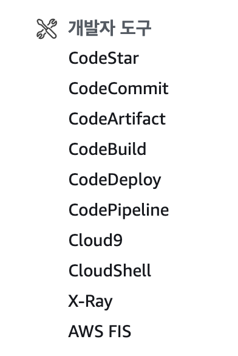

배포 자동화란 한 번의 클릭 혹은 명령어 입력을 통해 전체 배포 과정을 자동으로 진행하는 것을 의미한다.
배포 자동화가 필요한 이유는 수동적이고 반복적인 배포 과정을 자동화함으로써 시간이 절약되며 휴면 에러(Human Error)를 방지할 수 있기 때문이다.
휴먼 에러란 사람이 수동적으로 배포 과정을 진행하는 중에 생기는 실수를 뜻한다.
그전에 했던 배포 과정과 비교하여 특정 과정을 생략하거나 다르게 진행하여 오류가 발생하는 것이 휴먼 에러의 예로 볼 수 있다.
배포에서 파이프라인(Pipeline)이란 용어는 소스 코드의 관리부터 실제 서비스로의 배포 과정을 연결하는 구조를 뜻한다.
파이프라인은 전체 배포 과정을 여러 단계(Stages)로 분리한다.
각 단계는 파이프라인 안에서 순차적으로 실행되며 단계마다 주어진 작업(Actions)을 수행한다.
파이프라인의 단계는 상황과 필요에 따라 더 세분화되거나 간소화될 수 있지만 여러 단계로 분리할 때 대표적으로 쓰이는 Source, Build, Deploy 세 가지 단계가 존재한다.
Source 단계에서는 원격 저장소에 관리되고 있는 소스 코드에 변경 사항이 일어날 경우 이를 감지하고 다음 단계로 전달하는 작업을 수행한다.
Build 단계에서는 Source 단계에서 전달받은 코드를 컴파일, 빌드, 테스트하여 가공한다.
또한 Build 단계를 거쳐 생성된 결과물을 다음 단계로 전달하는 작업을 수행한다.
Deploy 단계에서는 Build 단계로부터 전달받은 결과물을 실제 서비스에 반영하는 작업을 수행한다.
AWS에는 개발자 도구 섹션이 존재하며 개발자 도구 섹션에서 제공하는 서비스를 활용하여 배포 자동화 파이프라인을 구축할 수 있다.

Source 단계를 구성할 때 CodeCommit 서비스를 이용한다.
CodeCommit은 GitHub와 유사한 서비스를 제공하는 버전 관리 도구이다.
Build 단계에서는 CodeBuild 서비스를 이용한다.
CodeBuild 서비스를 통해 유닛 테스트, 컴파일, 빌드와 같은 빌드 단계에서 필수적으로 실행되어야 할 작업을 명령어를 통해 실행할 수 있다.
Deploy 단계를 구성할 때는 기본적으로 다양한 서비스를 이용할 수 있다.
CodeDeploy 서비스를 이용하면 실행되고 있는 서버 애플리케이션에 실시간으로 변경 사항을 전달할 수 있다.
각 단계를 연결하는 파이프라인을 구축할 때 CodePipeline 서비스를 이용한다.
주의할 점은 AWS 프리티어 계정 사용 시 한 계정에 두 개 이상의 파이프라인을 생성하면 추가 요금이 부여될 수 있다.